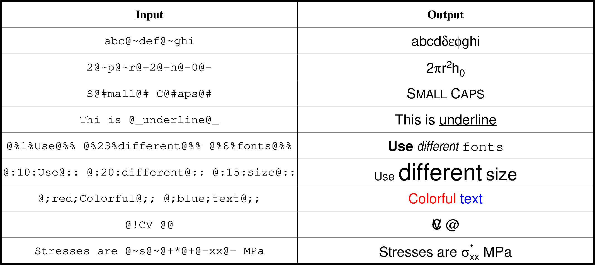

4.7 转义序列¶
前面一节已经介绍了如何设置文字的文字大小、字体和颜色。在此基础上，GMT提供了转义字符，以实现上标、下标等功能，并可以在一个字符串内随意切换字体、字号和颜色，给文本加入了更丰富的效果。
4.7.1 转义字符¶
GMT用 @ 符号实现转义的功能。将 @ 符号与某些字符结合起来，即构成了一系列可以实现特殊效果的转义字符。
GMT可以识别的转义字符在下表列出：
| 转义字符 | 说明 |
|---|---|
@+ |
打开/关闭上标 |
@- |
打开/关闭下标 |
@_ |
打开/关闭下划线 |
@# |
打开/关闭小型大写字母（small caps） |
@%<fontno>% |
切换至另一字体；@%% 重置回前一字体 |
@:<size>: |
切换至另一文本尺寸；@:: 重置回前一尺寸 |
@;<color>; |
切换至另一文本颜色；@;; 重置回前一颜色 |
@~ |
打开/关闭Symbol（12号）字体 |
@! |
用接下来的两个字符创建组合字符 |
@@ |
输出 @ 符号自身 |
除此之外，GMT还为一些常用的欧洲字母专门定义了转义字符。如下表：
| 代码 | 效果 | 代码 | 效果 |
|---|---|---|---|
@E |
Æ | @e |
æ |
@O |
Ø | @o |
ø |
@A |
Å | @a |
å |
@C |
Ç | @c |
ç |
@N |
Ñ | @n |
ñ |
@U |
Ü | @u |
ü |
@s |
ß | @i |
í |
4.7.2 小练习¶
下面给出了一些使用转义字符的示例，左边Input是命令中的输入，右边Output是图上显示的效果：

读者可以将下面命令中的 TEXT 和 Label 修改为不同的值，以体验转义字符的效果:
echo 5 2 TEXT | gmt pstext -R0/10/0/3 -Jx1c -Bxaf+l"Label" -BWSen -F+f20p > test.ps